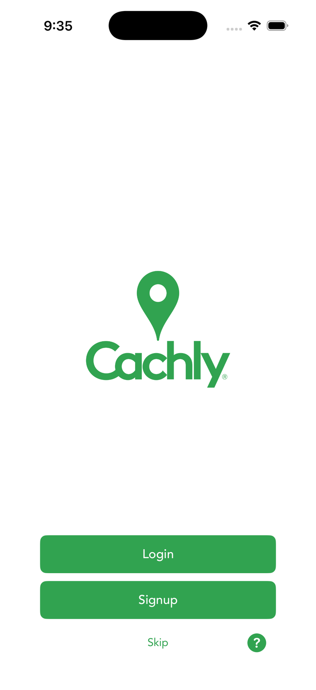

Accounts & Sign In
Cachly connects to your Geocaching.com (Groundspeak) account. Here’s how to sign in, what your membership level unlocks, and how that differs from a Cachly Pro subscription.

Signing in
The first time you open Cachly you’ll see the Login screen with three choices:
- Sign In — authenticate with an existing geocaching.com account.
- Sign Up — create a new geocaching.com account, then return to sign in.
- Skip — explore the app first; you can sign in later from More › your profile.
Cachly signs you in using OAuth through Geocaching.com’s own secure login page — Cachly never sees or stores your password. You may be asked to authorize Cachly the first time; approve it to continue. You can also authenticate with Facebook credentials, which guides you through initial setup and lets you use Facebook for future logins.
Basic vs. premium membership
Your geocaching.com membership level is set by Groundspeak, not by Cachly, and it governs what cache data the service returns. These limits come from geocaching.com and apply to every partner app:
| Basic (free) | Premium | |
|---|---|---|
| Full cache downloads / day | 3 | 16,000 |
| Lite cache downloads / day | 10,000 | 10,000 |
| Cache types in live search | Traditional & Event only | All types, incl. premium-only |
| Favorite points | Cannot award | Can award |
| Pocket queries & online lists | No | Yes |
Lite vs. full downloads: a lite cache includes only basic info (title, D/T, size, coordinates); a full cache adds the hint, description, attributes, waypoints and logs. Cachly downloads lite by default for speed — enable Full Cache Data to load everything up front. If a feature is unavailable due to your membership, Cachly explains and prompts a geocaching.com Premium upgrade.
Membership vs. Cachly Pro
These are two separate things:
- Geocaching.com premium — purchased from Groundspeak; unlocks server-side cache data and pocket queries.
- Cachly Pro — purchased in-app; unlocks Cachly features like offline vector maps and county tools. See Cachly Pro.
Multiple accounts
Cachly supports more than one geocaching.com identity, which powers multi-user logging — logging a find under several accounts at once (handy for families or shared finds). Additional usernames are managed in settings and used when you choose who to log as.